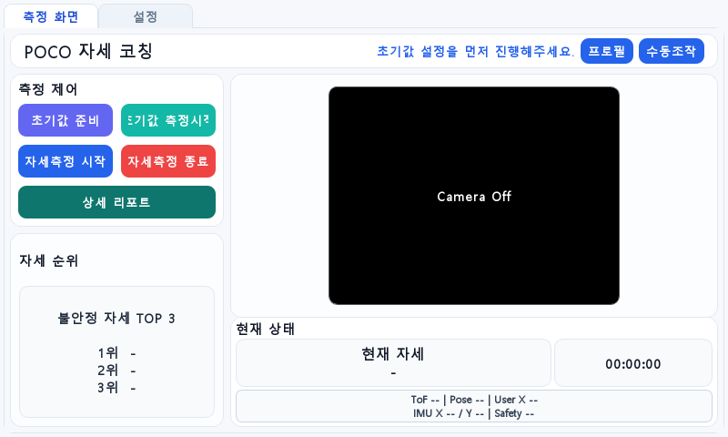
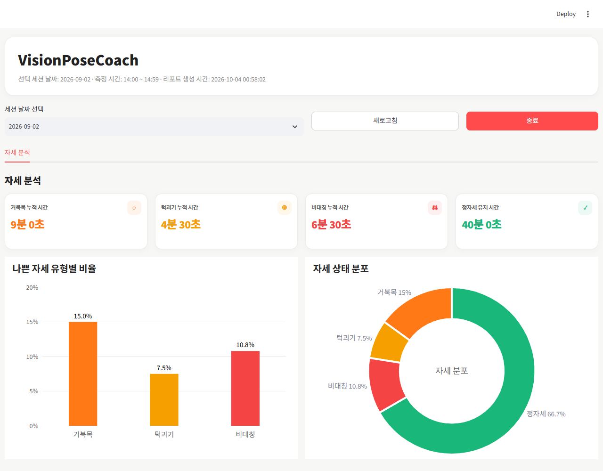

IMPLEMENTATION
사용자 흐름을 연결한 UI와 리포트
사용자가 기준 자세를 등록하고, 측정 결과를 화면과 일일 리포트로 확인하도록 구현했습니다.
신규 사용자는 모니터암 준비와 기준값 보정을 거쳐 측정을 시작하고, 기존 사용자는 저장된 프로필을 적용합니다. 자세·거리·IMU 기준값과 모터 각도를 함께 관리하고, 측정 기록을 CSV로 저장해 Streamlit 리포트로 연결했습니다.
리포트는 timestamp 기준 중복을 처리하고 세션을 나누어 집계했습니다. 1초당 1행을 기록하는 조건에서 기록 수를 시간으로 환산했습니다.